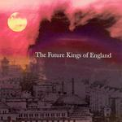

| Artist: | The Future Kings Of England |
| Title: | The Future Kings Of England |
| Label: | Backwater Records OLKCD011 |
| Length(s): | 54 minutes |
| Year(s) of release: | 2005 |
| Month of review: | [12/2005] |
| 1) | At Long Last... | 1.01 |
| 2) | 10:66 | 7.46 |
| 3) | Humber Doucy Lane | 8.55 |
| 4) | Silent And Invisible Converts | 7.29 |
| 5) | October Moth | 3.48 |
| 6) | Lilly Lockwood | 8.18 |
| 7) | The March Of The Mad Clowns | 3.35 |
| 8) | Pigwhistle | 14.00 |
| 9) | God Save The King | 0.48 |
Humber Doucy Lane opens with guitars in the style of the western soundtracks of Morricone. Then we enter mellotron country. The passage that follows is excellent again, raising the hairs in my neck. The music continues to be long drawn out in the vein of Godspeed! You Black Emperor: long epic pieces with stirring climaxes, and plenty of emotion even without vocals.
One of the drawbacks of this type of postrock (as it is usually called) is that the music is hard to describe in a way I usually do: the music on the songs is all very similar, contrary to what usually happens on progrock albums, but the music is not less potent. Far from it. They end Silent And Invisible Converts with a classical citation.
October Moth is relatively relaxed song, very spacey and of low tempo. One might consider this to be a mesmerizing, vibrant ballad of a kind. Melancholic too. The guitars are rather noisy though, at least the electric ones, and at the end of the song the noise level goes up quite a bit. Lilly Lockwood continues the mesmerizing rock style of before October Moth, with a bit of the noise elements of October Moth included as well. The music will sound like a bucketful of noise to many, but the noise does have meaning, at least it does to me. The ending is very peaceful and soothing.
The March Of The Mad Clowns is indeed a march, and like earlier I am reminded of the soundtracks of Morricone in his western days. The song changes of character in the final minute where we enter territory more typical for the band.
The real epic tune of the album is Pigwhistle. And it opens forcefully with the drummer hammering away on his cymbals, followed by easy rolling drums. The guitars, the mellotron combine for a long sprawling build up. At one third the music drops down to a minimum, we have entered spacy territory. There is even a friendly acoustic passage genre, past halfway home. And of course, we build back up to a climax, which reminds me of Nektar for some reason. There is some of Tab In The Ocean here. Excellent melodic material here. God Save The King is the short closer.